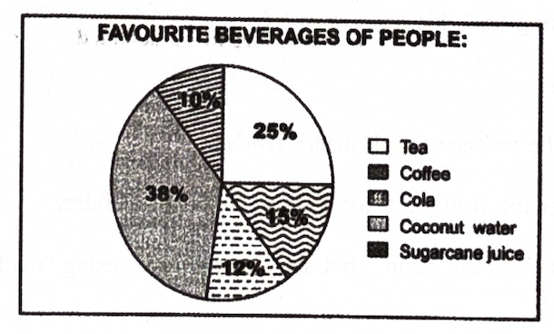

(Units 1, 5, 9, 13–16 & 25)
Marks: 40
Time: 1 ½ / 2 Hrs
1. Answer ANY ONE of the following questions in about 100 words. (1 × 4 = 4)
a) How can we prevent developing a dogmatic attitude as per Russell’s suggestion?
b) What does Bertrand Russell say about a person getting angry about a difference of opinion?
2. Answer ANY ONE of the following questions in about 100 words. (1 × 4 = 4)
a) How can one overcome fear? Explain.
b) What does the line ‘The River needs to take the risk of entering the ocean’ mean? Discuss.
3. Answer ANY ONE of the following questions in about 100 words. (1 × 4 = 4)
a) Describe the character of Arun, the boarding schoolboy.
b) What made Arun call the strange woman ‘mother’ at the end?
4. Read the following passage and answer ANY SIX questions given below: (6 × 1 = 6)
I was going to refuse out of shyness and suspicion, but she took me by the hand. Then I felt it would be silly to pull my hand away. She told a porter to look after my suitcase and then she led me down the platform. Her hand was gentle. She held my hand neither too firmly nor too lightly. I looked up at her again. She was not young, but she was not old.
i) Name the short story from which this passage is taken.
ii) What was Arun going to do?
iii) How did she hold his hand?
iv) How did Arun feel of taking back his hand away?
v) What did she tell a porter?
vi) Pick out the word from the passage which means tender.
vii) ‘She held my hand neither too firmly nor too lightly.’ Say true or false.
viii) Rewrite the sentence “She was not young, but she was not old.” using “neither......nor.”
5. Read the following passage and answer ANY SIX questions given below: (6 × 1 = 6)
Intelligence at its Zenith
The students of Ruia College, Mumbai were wonder-struck when they saw a nine-year-old visiting professor explaining the difficult concepts of Mathematics, Physics and Chemistry with ease. He is Soborno Isaac Bari, the youngest professor in the world. Born in 2012 to Rashidul Bari, a mathematician and Shaheda Bari, he showed exceptional abilities from childhood. For his problem-solving capacities, he got a letter of recognition from the former U.S. President Barack Obama in 2016 and received the Global Child Prodigy Award in 2020. India nominated him for the Nobel Prize 2021. Besides being a genius in Mathematics and Science, he is a writer. At the tender age of seven, he wrote a book titled The Love which outlines his dream to live in a world without terrorism, communal harmony and world peace! Then, let’s unleash “THE LOVE”...
i) Why were Ruia College students wonder-struck?
ii) What is the greatness of Soborno Bari?
iii) What is Soborno’s father?
iv) Former U.S. President Donald Trump recognized Soborno’s problem-solving capacities. Say true or false.
v) Which country nominated the child prodigy for the Nobel Prize 2021?
vi) What does the book The Love outline?
vii) Write, from the passage, the opposite of the word dunce.
viii) Find the word from the passage which means a young person with remarkable abilities.
6. Study the pie-chart below and answer any FIVE questions given after. (5 × 1 = 5)

i) What does the pie chart show?
ii) How many beverages are taken into account?
iii) What is the most preferred beverage?
iv) How many people preferred coffee?
v) What is the least preferred beverage?
vi) People who preferred tea are ________.
vii) People who preferred cola are ________.
viii) People who preferred Coconut water are 27%. Write true or false.
7. Rewrite the following passage using FIVE of the punctuation marks wherever necessary. (5 × 1 = 5)
It is more difficult to deal with the self-esteem of man as a man because we cannot argue out the matter with some non-human mind. The only way I know of dealing with this general human conceit is to remind ourselves that man is a brief episode in the life of a small planet in a little corner of the universe and that for aught we know other parts of the cosmos may contain beings as superior to ourselves as we are to jellyfish.
8. Match the following words in Column ‘A’ with their definitions in Column ‘B’. (6 × 1 = 6)
| Column A | Column B |
|---|---|
| i) ambidextrous | a) one who eats excessively |
| ii) contemporary | b) something which is out of date |
| iii) glutton | c) a person walking on a street |
| iv) invincible | d) able to use both hands equally well |
| v) obsolete | e) living or occurring at the same time |
| vi) pedestrian | f) too strong to be defeated |